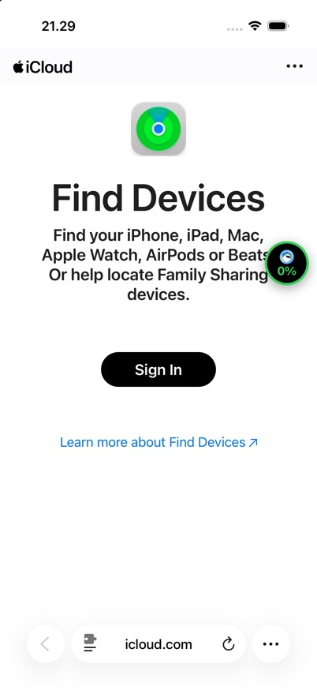

lphone-login
What the detector saw, drawn as a page. Not the real site: the corpus keeps only this snapshot.
Find Devices - Apple iCloud
Locating... Find Devices All Devices iPhone 11 Now Play Sound Mark As Lost Erase This Device iPhone 11 a few minutes ago Play Sound Mark As Lost Erase This Device
image: Your profile photoimage: iPhone| Type | scam |
|---|---|
| Source | real page |
| Should get | ≥ 80 % · scam, block it |
| Got (Test 2a) | L1–2: 39 · final: 39 (warning 1) · ⚠️ only warned |
| Why | lookalike_domain (L2, +25)brand_plus_keyword (L2, +14) |
| Live (Test 2b) | redirects to the real icloud.com Find Devices; 0% badge (cloaked kit) sent to server: none · push: — |
| Tags | lookalike-brand credential-iframe apple |
| Where it comes from | found by Imelda 2026-10-21; static HTML read, never opened in a browser. Live phishing URL: do not open it. |
| Note | Clone of iCloud 'Find Devices'. The login lives in an iframe (form_container.php?module=code6.php) that asks for the 6-digit iPhone passcode, then an Apple ID step. snapshot.forms is empty because a main-document-only snapshot cannot see it: asks_pin/asks_password would not fire unless the extension reads iframes. Domain is .com and 20 months old, so cheap_tld and new_domain do not help either. |
| File | ai/eval/data/scam/seed.json, line 3 |
Safari, live

Raw sample (JSON)
{
"id": "lphone-login",
"label": "scam",
"tags": [
"lookalike-brand",
"credential-iframe",
"apple"
],
"synthetic": false,
"redacted": true,
"source": "found by Imelda 2026-10-21; static HTML read, never opened in a browser. Live phishing URL: do not open it.",
"collectedAt": "2026-10-21T12:47:38.000Z",
"notes": "Clone of iCloud 'Find Devices'. The login lives in an iframe (form_container.php?module=code6.php) that asks for the 6-digit iPhone passcode, then an Apple ID step. snapshot.forms is empty because a main-document-only snapshot cannot see it: asks_pin/asks_password would not fire unless the extension reads iframes. Domain is .com and 20 months old, so cheap_tld and new_domain do not help either.",
"snapshot": {
"url": "https://lphone-login.com/tRrQ",
"title": "Find Devices - Apple iCloud",
"lang": "en-us",
"text": "Locating... Find Devices All Devices iPhone 11 Now Play Sound Mark As Lost Erase This Device iPhone 11 a few minutes ago Play Sound Mark As Lost Erase This Device",
"forms": [],
"imageAlts": [
"Your profile photo",
"iPhone"
],
"capturedAt": "2026-10-21T12:47:38.000Z"
},
"meta": {
"iframes": [
"/script/navigation_compass_find_devices_login_passcode6_2026/2026/components/form_container.php?module=REDACTED&theme=REDACTED"
]
}
}